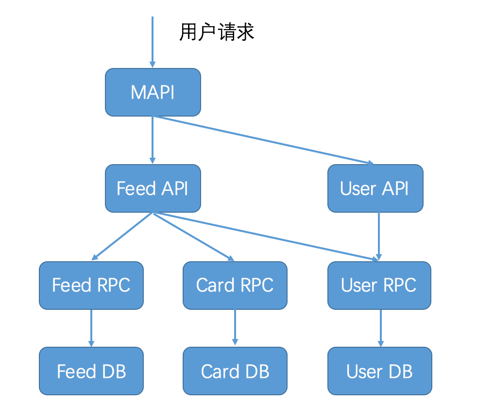

- 00 开篇词 微服务，从放弃到入门.md.html
- 01 到底什么是微服务？.md.html
- 02 从单体应用走向服务化.md.html
- 03 初探微服务架构.md.html
- 04 如何发布和引用服务？.md.html
- 05 如何注册和发现服务？.md.html
- 06 如何实现RPC远程服务调用？.md.html
- 07 如何监控微服务调用？.md.html
- 08 如何追踪微服务调用？.md.html
- 09 微服务治理的手段有哪些？.md.html
- 10 Dubbo框架里的微服务组件.md.html
- 11 服务发布和引用的实践.md.html
- 12 如何将注册中心落地？.md.html
- 13 开源服务注册中心如何选型？.md.html
- 14 开源RPC框架如何选型？.md.html
- 15 如何搭建一个可靠的监控系统？.md.html
- 16 如何搭建一套适合你的服务追踪系统？.md.html
- 17 如何识别服务节点是否存活？.md.html
- 18 如何使用负载均衡算法？.md.html
- 19 如何使用服务路由？.md.html
- 20 服务端出现故障时该如何应对？.md.html
- 21 服务调用失败时有哪些处理手段？.md.html
- 22 如何管理服务配置？.md.html
- 23 如何搭建微服务治理平台？.md.html
- 24 微服务架构该如何落地？.md.html
- 25 微服务为什么要容器化？.md.html
- 26 微服务容器化运维：镜像仓库和资源调度.md.html
- 27 微服务容器化运维：容器调度和服务编排.md.html
- 28 微服务容器化运维：微博容器运维平台DCP.md.html
- 29 微服务如何实现DevOps？.md.html
- 30 如何做好微服务容量规划？.md.html
- 31 微服务多机房部署实践.md.html
- 32 微服务混合云部署实践.md.html
- 33 下一代微服务架构Service Mesh.md.html
- 34 Istio：Service Mesh的代表产品.md.html
- 35 微博Service Mesh实践之路（上）.md.html
- 36 微博Service Mesh实践之路（下）.md.html
- 微博技术解密（上） 微博信息流是如何实现的？.md.html
- 微博技术解密（下）微博存储的那些事儿.md.html
- 结束语 微服务，从入门到精通.md.html
- 阿忠伯的特别放送 答疑解惑01.md.html
- 阿忠伯的特别放送 答疑解惑02.md.html
- 捐赠
阿忠伯的特别放送 答疑解惑01
你好，我是胡忠想，我的专栏虽然已经结束了，但我还会一直在专栏里为同学们答疑解惑。所以，即使你现在刚加入到专栏学习中，也可以随时留下你的疑问。同学们问得比较多的问题我会记录下来专门写成一期答疑文章，希望和你一起详细讨论。
今天是答疑的第一期，我选取了前面几期比较有代表性的问题，其中很多也是我在实践过程中踩过的坑，针对这些问题我来分享一下我的体会。


这三个问题都是关于服务拆分的，下面我就从微服务拆分粒度、拆分方式以及微博微服务拆分实践三个方面来谈谈服务拆分那些事儿。
首先来看微服务拆分粒度。微服务拆分的粒度可以很粗也可以很细，具体要视团队的规模和业务复杂度而定。通常来讲，当团队的规模逐渐变大时，一个业务模块同时就会有多个开发人员修改，在需求研发期间，经常需要协调合并代码，沟通打包上线，研发成本越来越高，这时就需要对这个业务进行微服务拆分了，变成多个独立的微服务，分别进行代码开发、打包上线，实现研发的解耦。但是也要避免一个极端，就是把微服务拆分得太细，出现一个开发需要维护十几个以上服务的情况，这样的话团队维护的成本太高也不可取。
再来看下微服务拆分方式。在具体进行微服务拆分时，通常有两种方式，一种是按照服务的关联维度进行拆分，一种是按照数据库隔离维度进行拆分。按照服务关联维度拆分指的是两个服务是否具有紧密耦合的业务逻辑，如果能从业务逻辑上进行解耦的话，不同的业务逻辑就可以拆分为单独的微服务。按照数据库隔离维度拆分是指如果两个业务逻辑依赖的数据库不同，那么就可以把它们拆分为两个微服务，分别依赖各自的数据库。
实际在进行微服务拆分时，通常是两种方式相结合，先进行数据库隔离维度的拆分，再进行服务关联维度的拆分。以微博的业务为例，一开始是个大的单体应用，所有的业务逻辑代码都耦合部署在一起，一个业务需求往往涉及多个业务逻辑，代码提交和打包上线的过程需要多个开发人员都参与其中。为了减少代码耦合带来的研发效率低的问题，首先按照数据库隔离维度进行拆分，微博内容相关的业务依赖的是微博内容数据库、微博用户相关的业务依赖的是微博用户数据库，对应的就把微博内容相关的业务拆分为内容服务、把微博用户相关的业务拆分为用户服务，从而实现对内容服务和用户服务进行解耦，分别部署成单独的服务。然后再按照服务关联维度进行拆分，又把内容服务中的微博服务和互动服务进行了拆分，跟微博相关的业务逻辑拆分为微博服务，跟互动相关的业务逻辑拆分为互动服务。
除此之外，在实际进行微服务拆分的时候，还需要考虑其他因素，比如微服务拆分后的性能是否可以接受。通常来讲，从单体应用拆分为微服务，服务调用由进程内调用变成不同服务器上进程之间的调用，经过网络传输必定会带来一定的损耗，所以在实际拆分时，要看业务对这个开销的敏感程度。以微博的feed业务为例，要展示用户关注的好友的timeline，需要首先聚合用户关注的所有人，再获取每个人的微博列表，最后把所有人的微博列表按照时间进行排序。在单体应用时期，feed接口的平均耗时在200ms左右，而把调用用户服务获取关注人列表，从进程内调用拆分为RPC调用后，平均耗时从5ms左右增加到8ms左右，这个损耗对于业务来说是完全可以接受的，所以我们就把用户服务单独拆分为一个单独的微服务。另外我讲一个服务化拆分的反例，在微博的直播card展示时，需要聚合播放计数，最开始采用的方案是进行服务化拆分，把播放计数单独拆分为一个微服务，这样的话直播card聚合播放计数时，就通过RPC的方式来调用播放计数服务。但直播card本身业务耗时不到10ms，而拆分为微服务后，调用播放计数接口耗时从2ms增加到5ms左右，这样相对来说开销就有点大了，并且这个接口的调用量也很高，所以后来我们又把直播card聚合播放计数从RPC调用改成了进程内的调用。所以说具体进行服务化拆分时，一般都是先进行稍微大粒度的拆分，业务验证稳定后，再逐步进行细化的服务拆分。
微博的大多数微服务都是从以前的单体应用中拆分出来的，所以为了保持业务上的延续性，接口的定义依然保持跟原先保持一致，只不过是单独抽取到一个公共的JAR包中，这样的话服务的每个调用方都需要引入服务的接口定义所在的JAR包，对于服务调用方来说跟原先的单体应用内的使用方式没有什么区别。你可以理解为是通过Java代码来定义接口规范，不需要额外的接口文档、元数据之类的。
还有一种业务场景，就是去年我们开始推进的跨语言服务化改造，就是把原先的PHP业务方调用Java业务，从HTTP调用改造成RPC调用，这个时候就涉及到如何定义接口了。在采用HTTP调用的时期，接口定义是通过wiki文档来维护的，服务调用方通过查看接口的wiki定义，就可以知道接口的参数、返回值以及错误代码等。迁移到RPC调用时，为了做到平滑过渡，服务调用方可以继续参照原先接口的wiki文档，接口调用的参数仍然保持不变，返回值也继续沿用原有的JSON格式，只是调用的URL从原先的HTTP格式修改为扩展类型的URL。
目前比较规范的接口定义方式主要有两种，一种是以Swagger为代表，可以用来描述Restful API，并且具备可视化的API编辑功能；一种是以PB文件为代表的，用来描述跨语言的接口定义，你可以根据自己的实际需要来决定采用哪种方式。
一般来说，服务化框架都会集成监控日志功能。以微博的服务化框架Motan为例，会将每一次服务调用的数据进行收集，然后以JSON格式的方式，统一输出到服务部署路径下logs目录中的profile.log，它的格式你可以参考下面的代码。
2018-11-18 16:58:32 {"type":"MOTAN","name":"brha_zdelay_cn.sina.api.data.service.SinaUserService.getBareSinaUsers(long[])","slowThreshold":"200","total_count":"266","slow_count":"0","avg_time":"10.00","interval1":"0","interval2":"266","interval3":"0","interval4":"0","interval5":"0","p75":"10.00","p95":"10.00","p98":"10.00","p99":"10.00","p999":"10.00","biz_excp":"0","other_excp":"0","avg_tps":"26","max_tps":"31","min_tps":"23"}
上面这段profile.log主要分为三个部分。
1.“type”字段，标识这个监控项是什么类型，比如Motan代表的是接口调用。
2.“name”字段，标识这个监控项的名字是什么，对应上面这段监控log，名字就是
brha_zdelay_cn.sina.api.data.service.SinaUserService.getBareSinaUsers(long[])
3.自定义字段，用来具体打印监控项的各种指标，比如total_count字段代表是调用总量，avg_time字段代表的是平均耗时，p999字段代表的是99.9%的调用耗时在多少以下等。
数据处理的实时操作，在服务追踪中主要用于定位线上问题，主要有两个业务场景。
第一个场景是快速定位线上服务问题。以下图所示的微博业务为例，一次用户feed请求，需要经过链路上的多个环节，如果用户的feed请求变慢，就需要快速定位到底是链路上的哪个环节导致。此时就需要能够将服务追踪收集到的每个环节的调用数据，进行实时聚合，计算每个环节的平均耗时和接口成功率等，然后输出到监控Dashboard上。这样的话，通过一览监控Dashboard上各个环节的实时服务状况，就能快速定位问题了。
第二个场景是确定某一次用户请求失败的原因。继续以图中所示的微博业务为例，某一次用户请求失败了，需要能定位具体在哪个环节导致调用失败，这时候就需要根据用户请求的traceId和spanId，把一次用户请求经过各个环节的服务调用串联起来，并且找出调用的前后文，这样的话就能从MAPI的调用开始，接着查看Feed API的调用，再继续查看Feed RPC的调用，以此类推，一层层往下查看，最终就可以定位到底是在哪一层发生了错误。

数据处理的离线操作，一般应用在需要统计一段时间内某个服务的调用量、平均耗时、成功率等，这一段时间可能是一个小时，也有可能是一天、一周或者一个月等，所以需要根据一段时间内产生的追踪日志，进行离线计算才可以得出。
先来回答“僵尸节点”的问题。在微博的业务场景下，服务进行缩容有两个步骤，第一步是调用注册中心的反注册接口把节点从服务节点列表中删除，第二步是回收服务器，并把节点从服务池列表中删除。这里就存在一种可能是第一步操作失败，第二步操作成功，那么注册中心中就会残存一些已经不存在的节点，这些节点也不会汇报心跳，因此会被注册中心标记为“dead”状态，也就是我们所说的“僵尸节点”，因此需要每天定时清理注册中心中存在的“僵尸节点”。我是通过比对服务池的节点列表与注册中心的节点列表，如果某个节点在注册中心中存在，但在服务池的节点列表中找不到，就认为是“僵尸节点”，需要把它删除。
再来看批量反注册接口的问题。在微博的业务场景下，存在一个节点同时部署了多个微服务的情况，所以在进行节点缩容时，需要多次调用注册中心的反注册接口，以把同一个节点从多个服务的节点列表中删除。有一种简单的方案，是在反注册的时候，直接根据节点的IP进行反注册，这样的话注册中心会查询这个节点注册的所有服务，然后一次性把这个节点从所有服务的列表中删除。理论上批量删除只需要调用一次就可以把节点从注册中心中删除，相比于之前多次调用成功率要高很多，并且从我们实际使用效果上来看，也不会再存在“僵尸节点”的情况了。
今天的答疑就到这里啦，欢迎你在留言区写下自己学习、实践微服务的心得和体会，与我和其他同学一起讨论。你也可以点击“请朋友读”，把今天的内容分享给好友，或许这篇文章可以帮到他。
© 2019 - 2023 Liangliang Lee. Powered by gin and hexo-theme-book.